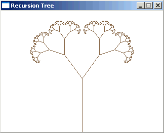
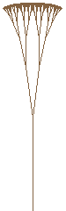
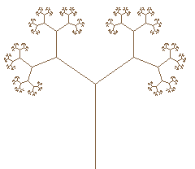
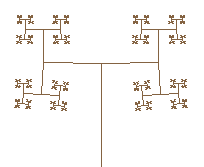
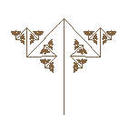
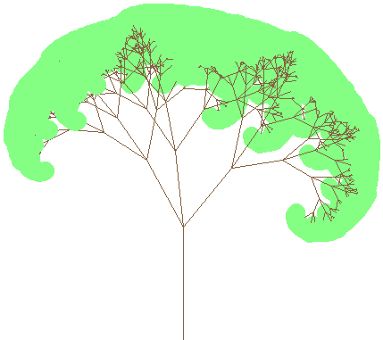
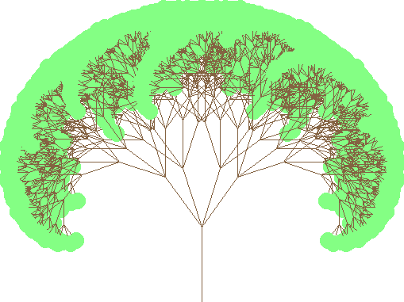

double pi = 3.1415926535897932384626433832795;
int maxRecursions = 8; //never make this too big or it'll take forever
double angle = 0.2 * pi; //angle in radians
double shrink = 1.8; //relative size of new branches
void recursion(double posX, double posY, double dirX, double dirY, double size, int n);
|
int main(int argc, char *argv[])
{
screen(320, 240, 0, "Recursion Tree");
cls(RGB_White); //make background white
//Now the recursion function takes care of the rest
recursion(w / 2, h - 1, 0, -1, h / 2.3, 0);
redraw();
sleep();
return 0;
}
|
void recursion(double posX, double posY, double dirX, double dirY, double size, int n)
{
int x1, x2, y1, y2;
int x3, x4, y3, y4;
x1 = int(posX);
y1 = int(posY);
x2 = int(posX + size * dirX);
y2 = int(posY + size * dirY);
if(clipLine(x1, y1, x2, y2, x3, y3, x4, y4))
drawLine(x3, y3, x4, y4, ColorRGB(128, 96, 64));
if(n >= maxRecursions) return;
|
double posX2, posY2, dirX2, dirY2, size2;
int n2;
posX2 = posX + size * dirX;
posY2 = posY + size * dirY;
size2 = size / shrink;
n2 = n + 1;
dirX2 = cos(angle) * dirX + sin(angle) * dirY;
dirY2 = -sin(angle) * dirX + cos(angle) * dirY;
recursion(posX2, posY2, dirX2, dirY2, size2, n2);
dirX2 = cos(-angle) * dirX + sin(-angle) * dirY;
dirY2 = -sin(-angle) * dirX + cos(-angle) * dirY;
recursion(posX2, posY2, dirX2, dirY2, size2, n2);
}
|

int main(int argc, char *argv[])
{
screen(320, 240, 0, "Recursion Tree");
while(!done())
{
angle = getTicks() / 2000.0;
cls(RGB_White);
recursion(w / 2, h - 1, 0, -1, h / 2.3, 0);
redraw();
}
return 0;
}
|




double pi = 3.1415926535897932384626433832795;
int maxRecursions = 6; //max number of recursions
double angle; //angle in radians, this parameter changes with time
bool enable1, enable2, enable3, enable4; //enable or disable up to 4 branches
double a1, a2, a3, a4, c1, c2, c3, c4; //angle multipliers and adders for those 4 branches
double size, shrink; //the size of the first branch, and the relative size of the next ones
bool releaseSpace; //for input
int drawLeaves = 4; //what type of leaves to draw, if any
void recursionTree(double posX, double posY, double dirX, double dirY, double size, int n);
|
int main(int argc, char *argv[])
{
screen(512, 384, 0, "Recursion Tree");
//Initial settings
enable1 = 1; enable2 = 1; enable3 = 1; enable4 = 0; //1 enables, 0 disables branch
a1 = 1.0; a2 = -1.0; a3 = 0.0; a4 = 0.0; //how fast the angles rotate
c1 = 0.0; c2 = 0.0; c3 = 0.2; c4 = 0.0; //absolute angle
size = h / 3; //size of the first branch (the stem)
shrink = 1.5; //relative size of the new branch
while(!done())
{
angle = getTicks() / 3000.0;
cls(RGB_White);
recursionTree(w / 2, h - 1, 0, -1, size, 0); //This function will draw a single line and call itself a few times, creating a tree
redraw();
//Presets of settings
readKeys();
|
if(keyPressed(SDLK_a)) {enable1 = enable2 = enable3 = 1; enable4 = 0;a1 =1;a2 = -1; a3 = 0;c1 = c2 = 0; c3 = 0.2; size = h / 3; shrink = 1.5; maxRecursions = 6;} //default one with rotating branches
if(keyPressed(SDLK_b)) {enable1 = enable2 = enable3 = 1; enable4 = 0;a1 = a2 =a3 = 0; c1 = 0;c2 = 2 * pi / 3; c3 = -2 * pi / 3; size = h / 2; shrink = 2; maxRecursions = 8;} //sierpinski triangle
if(keyPressed(SDLK_c) {enable1 = enable2 = enable3 = enable4=1; a1 = a2 = a3 = a4 = 0; c1 = 0; c2 = pi / 2; c3 = pi; c4 = -pi / 2; size = h / 2; shrink = 2; maxRecursions = 6;} //square
if(keyPressed(SDLK_d) {enable1 = enable2 = enable3 = 1; enable4 = 0;a1 = a2 = a3 = 0; c1 = 0; c2 = pi / 2; c3 = -pi / 2; size = h / 2; shrink = 2; maxRecursions = 8;} //90?
if(keyPressed(SDLK_e) {enable1 = enable2 = enable3 = 1; enable4 = 0;a1 = a2 = a3 = 0; c1 = 0.5; c2 = 0.1; c3 = -0.7; size = h / 3; shrink = 1.5; maxRecursions = 8;} //a random tree with 3 branches
if(keyPressed(SDLK_f) {enable1 = enable2 = enable3 = enable4 = 1; a1 = a2 = a3 = a4 = 0; c1 = 0.1 * pi; c2 = -0.1 * pi; c3 = 0.2 * pi; c4 = -0.2 * pi; size = h / 4; shrink = 1.25; maxRecursions = 6;} //a random tree with 4 branches
if(keyPressed(SDLK_g) {enable1 = enable2 = enable3 = 1; enable4 = 0; a1 = 1; a2 = -1; a3 = 2.0; c1 = c2 = c3 = c4 = 0; size = h / 2; shrink = 2; maxRecursions = 6;} //some animating tree
if(keyPressed(SDLK_h) {enable1 = enable2 = enable3 = 1; enable4 = 0; a1 = 1; a2 = -1; a3 = 2.5; c1 = c2 = c3 = c4 = 0; size = h / 2; shrink = 2; maxRecursions = 6;} //some animating tree
if(keyPressed(SDLK_i) {enable1 = enable2 = enable3 = 1; enable4 = 0; a1 = 1; a2 = -1; a3 = 3.0; c1 = c2 = c3 = c4 = 0; size = h / 2; shrink = 2; maxRecursions = 6;} //some animating tree
if(keyPressed(SDLK_SPACE)) {drawLeaves++; drawLeaves %= 5; releaseSpace = 0;}
}
return 0;
}
|
void recursionTree(double posX, double posY, double dirX, double dirY, double size, int n)
{
int x1, x2, y1, y2;
int x3, x4, y3, y4;
x1 = int(posX);
y1 = int(posY);
x2 = int(posX + size * dirX);
y2 = int(posY + size * dirY);
if(clipLine(x1, y1, x2, y2, x3, y3, x4, y4))
drawLine(x3, y3, x4, y4, ColorRGB(128, 96, 64));
if(n == maxRecursions && drawLeaves == 1) drawCircle(x4, y4, 5, ColorRGB(128, 255, 128));
if(n == maxRecursions && drawLeaves == 2) drawDisk(x4, y4, 5, ColorRGB(128, 255, 128));
if(n == maxRecursions && drawLeaves == 3) drawCircle(x4, y4, 10, ColorRGB(128, 255, 128));
if(n == maxRecursions && drawLeaves == 4) drawDisk(x4, y4, 10, ColorRGB(128, 255, 128));
if(n>=maxRecursions) return;
|
double posX2, posY2, dirX2, dirY2, size2;
int n2;
posX2 = posX + size * dirX;
posY2 = posY + size * dirY;
size2 = size / shrink;
n2 = n + 1;
if(enable1)
{
dirX2 = cos(a1 * angle + c1) * dirX + sin(a1 * angle + c1) * dirY; //Rotation
dirY2 = -sin(a1 * angle + c1) * dirX + cos(a1 * angle + c1) * dirY;
recursionTree(posX2, posY2, dirX2, dirY2, size2, n2);
}
if(enable2)
{
dirX2 = cos(a2 * angle + c2) * dirX + sin(a2 * angle + c2) * dirY;
dirY2 = -sin(a2 * angle + c2) * dirX + cos(a2 * angle + c2) * dirY;
recursionTree(posX2, posY2, dirX2, dirY2, size2, n2);
}
if(enable3)
{
dirX2 = cos(a3 * angle + c3) * dirX + sin(a3 * angle + c3) * dirY;
dirY2 = -sin(a3 * angle + c3) * dirX + cos(a3 * angle + c3) * dirY;
recursionTree(posX2, posY2, dirX2, dirY2, size2, n2);
}
if(enable4)
{
dirX2 = cos(a4 * angle + c4) * dirX + sin(a4 * angle + c4) * dirY;
dirY2 = -sin(a4 * angle + c4) * dirX + cos(a4 * angle + c4) * dirY;
recursionTree(posX2, posY2, dirX2, dirY2, size2, n2);
}
}
|

